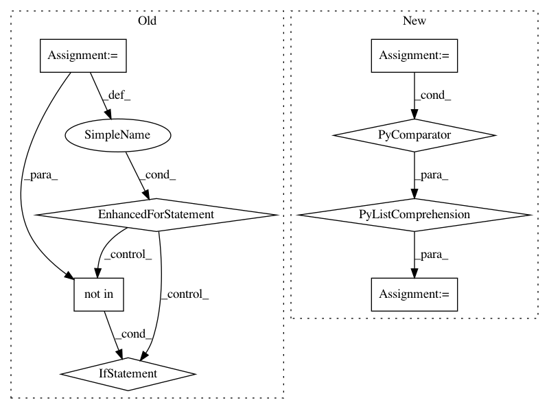

d556116728d4f505eb14be081f29e32212145725,onmt/IO.py,,merge_vocabs,#Any#Any#,42
Before Change
// take the counts of the disjoint union of all the vocabs
for vocab in vocabs:
// XXX note that `vocab.freqs` does not contain special symbols
for word, count in vocab.freqs.most_common():
if word not in merged:
merged[word] = 0
merged[word] += count
return torchtext.vocab.Vocab(merged,
specials=[PAD_WORD, BOS_WORD, EOS_WORD],
max_size=vocab_size)
After Change
Return:
`torchtext.vocab.Vocab`
merged = Counter(chain(*[vocab.freqs for vocab in vocabs]))
return torchtext.vocab.Vocab(merged,
specials=[PAD_WORD, BOS_WORD, EOS_WORD],
max_size=vocab_size)
In pattern: SUPERPATTERN
Frequency: 3
Non-data size: 8
Instances
Project Name: OpenNMT/OpenNMT-py
Commit Name: d556116728d4f505eb14be081f29e32212145725
Time: 2017-09-01
Author: bpeters@coli.uni-saarland.de
File Name: onmt/IO.py
Class Name:
Method Name: merge_vocabs
Project Name: OpenNMT/OpenNMT-py
Commit Name: 13bbee615c87c812ddcfff73746cd504222e3fb0
Time: 2017-08-30
Author: nasa4836@gmail.com
File Name: onmt/Models.py
Class Name:
Method Name: make_base_model
Project Name: OpenNMT/OpenNMT-py
Commit Name: 32579822389423c7f4120e222aa26652f8507735
Time: 2018-12-18
Author: guillaumekln@users.noreply.github.com
File Name: onmt/utils/optimizers.py
Class Name: Optimizer
Method Name: set_parameters